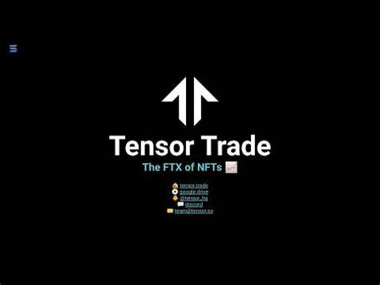

Tensor Trade® | Official Site Home
Tensor Trade is an open source Python framework for building, training, evaluating, and deploying robust trading algorithms using reinforcement learning. The framework focuses on being highly composable and extensible, to allow the system to scale from simple trading strategies on a single CPU, to complex investment strategies run on a distribution of HPC machines.
Under the hood, the framework uses many of the APIs from existing machine learning libraries to maintain high quality data pipelines and learning models. One of the main goals of TensorTrade is to enable fast experimentation with algorithmic trading strategies, by leveraging the existing tools and pipelines provided by
Every piece of the framework is split up into re-usable components, allowing you to take advantage of the general use components built by the community, while keeping your proprietary features private. The aim is to simplify the process of testing and deploying robust trading agents using deep reinforcement learning, to allow you and I to focus on creating profitable strategies.
Tensor Trade is live and ready to use!
To get started:
- Go to Tensor: www.tensor.trade
- Search or browse for your favorite NFT collection (eg "DuckPunkz" or "Cyber Samurais")
- Buy, sell, or market-make
If you'd like a bit more explanation on how each order type works, read the below:
Once you're done trading, you can close your order:
Closing an Order
Buy or Bid 00
Sell or List 00
Market - Make
Once you're done trading, you can close your order:
Closing an Order
Marketplace
Tensor is Solana's Leading NFT Marketplace built for traders 📈 and creators 🎨.
- Deepest liquidity on all of Solana
- Coverage of 30,000+ collections on Solana
- A lightning-fast, composable UI that updates in real-time
- Advanced functionality for pros
- Full support for market-making orders and collection-wide bids
- Fun rewards for trading
Tensor Trade: Shaping the Future of Global Commerce
In the rapidly evolving landscape of international trade, Tensor Trade has emerged as a groundbreaking force, revolutionizing the way businesses engage in commerce and disrupting traditional paradigms. This transformative concept is built upon cutting-edge technologies and innovative economic models, introducing a new era of efficiency, transparency, and inclusivity to the global marketplace.
Decentralized Trading Platforms
Tensor Trade pioneers the introduction of decentralized trading platforms, harnessing the power of blockchain technology to create secure, transparent, and direct transactions between buyers and sellers. This eliminates the need for intermediaries, streamlining the trading process and significantly reducing costs associated with cross-border transactions.
Smart Contracts and AutomationAt the heart of Tensor Trade is the integration of smart contracts, enabling the automation of trade agreements. These self-executing contracts, encoded with predefined rules and conditions, ensure that transactions occur seamlessly and trustlessly. The automation not only enhances operational efficiency but also minimizes the risk of fraud, offering a level of security previously unseen in traditional trade.
Tensor Tensor FASTEST data ⚡️ | BULK actions 💥 | ADVANCED orders ⚙️ Tensor makes trading NFTs as fun as trading shit coins. We provide advanced trading features like real-time data (fastest on Solana), full historical candlestick prices, and AMM pools for NFTs. Sweep, bid, list and delist NFTs in bulk. If you're a power user and want access to the fastest platform for NFT trading on Solana, check out Tensor.
- If you put 10 NFTs into the protocol (let's say you set up a 10% delta)
- and the price 10x's from here
- you would have been better off holding the NFTs than providing liquidity because your order will have sold the NFTs gradually at prices lower than 10x
Tensor Trade Protocol Risk
Putting anything into any protocol is risky because it can get hacked and drained. There's no shortage of precedents in crypto history.
The good news for you is:
- ✅ There have been FAR fewer (literally by a magnitude) hacks on Solana vs Eth. This is because Solana's programming model is more complex but ultimately safer.
- ✅ At this point we're keeping the protocol closed source to reduce the attack surface, while we do the necessary security checks.
- ✅ We're the same team that wrote Gem Farm by Gemworks - a staking protocol that has been open-sourced from day 1 and that's used for staking by over 60% of NFT projects on Solana. Gem Farm has never been hacked or drained for ~12m since it's been released.
- ✅ We're actively using auditing software like Sec3 and are engaging with auditors to get our protocol to the point where we're comfortable open-sourcing it.
Conclusion
Tensor Trade emerges as a pioneering force that is reshaping the landscape of global commerce. With its foundation built on decentralized trading platforms, smart contracts, and the tokenization of assets, Tensor Trade introduces a new era of efficiency, transparency, and accessibility in international trade. The commitment to enhanced security and privacy, coupled with a focus on sustainability and eco-friendly practices, underscores Tensor Trade's dedication to responsible and forward-thinking business models.